Media library · CPS
Every clip, in one place.
All 28 videos and the usable screenshots from the project's CPS folder,
compressed for the web and grouped by module. Click any card to play it or enlarge it.
Driver safety
5 clipsThe driver-facing loop: camera, profile, alert, buzzer and the face check.
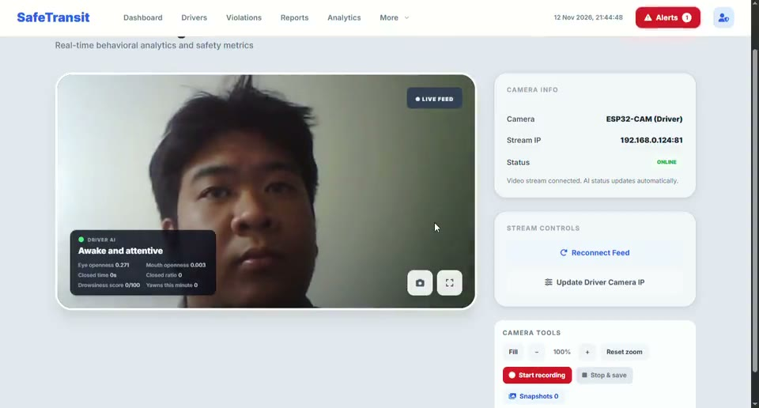
Driver camera + alert
Live driver feed, MediaPipe overlay and the dashboard alert during a trip.
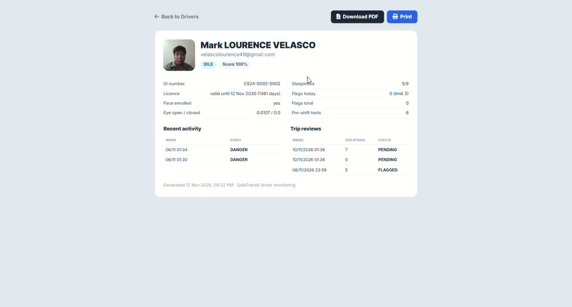
Driver profile & scorecard
A driver's safety score, flags, recent activity and printable scorecard.
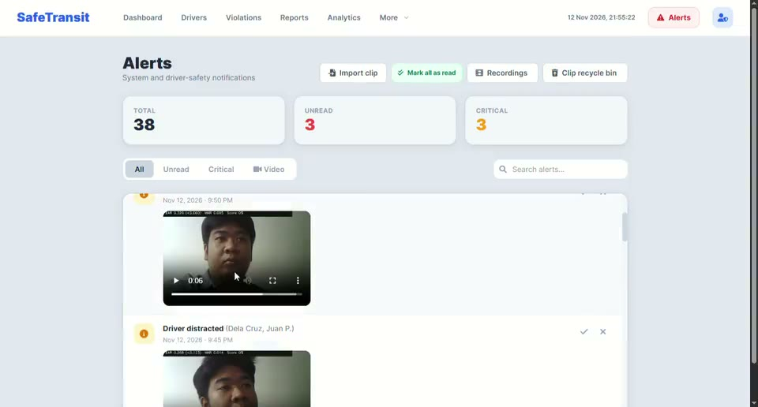
Alerts and saved clips
The alerts page: severity, search, saved clips and the clip recycle bin.
Buzzer notification
The in-cabin buzzer that sounds when a drowsiness threshold is crossed.
Face scan (auto-switch)
The pre-shift face scan matches an enrolled driver and switches the active driver automatically.
Trigger demos
3 clipsThe three new trigger captures: drowsiness, phone call and phone texting.
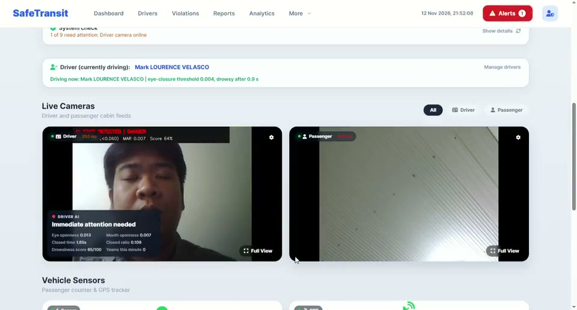
Drowsiness trigger
Eyes closing; the score rises to 65/100 and the alert is raised.
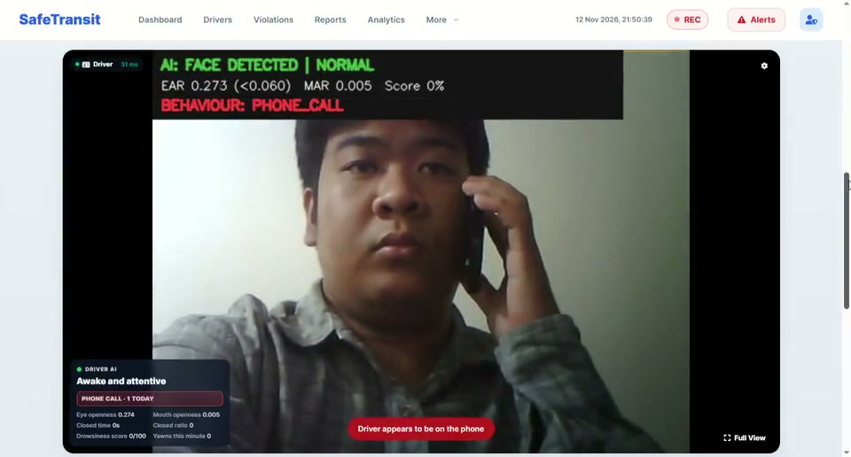
Phone call trigger
BEHAVIOUR: PHONE_CALL while the hand is at the ear.
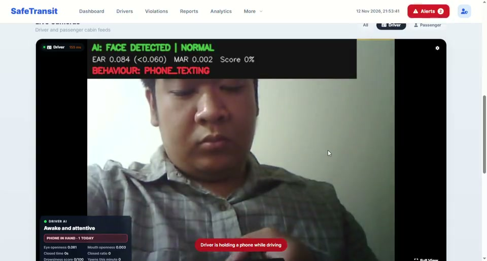
Phone texting trigger
BEHAVIOUR: PHONE_TEXTING while the phone is held.
Passenger counting
4 clipsTwo IR beams at the door; the dashboard shows the count and capacity.
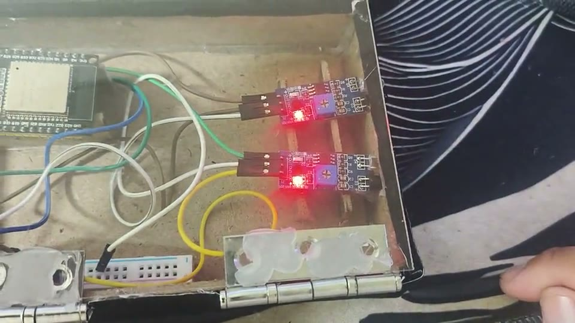
Passenger in — door rig
The IR beam pair on the bench as a hand breaks the beam.
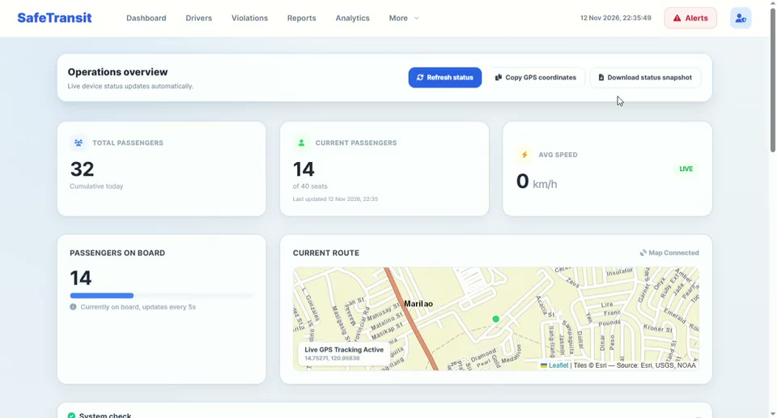
Passenger in — dashboard
The dashboard count as a passenger enters.
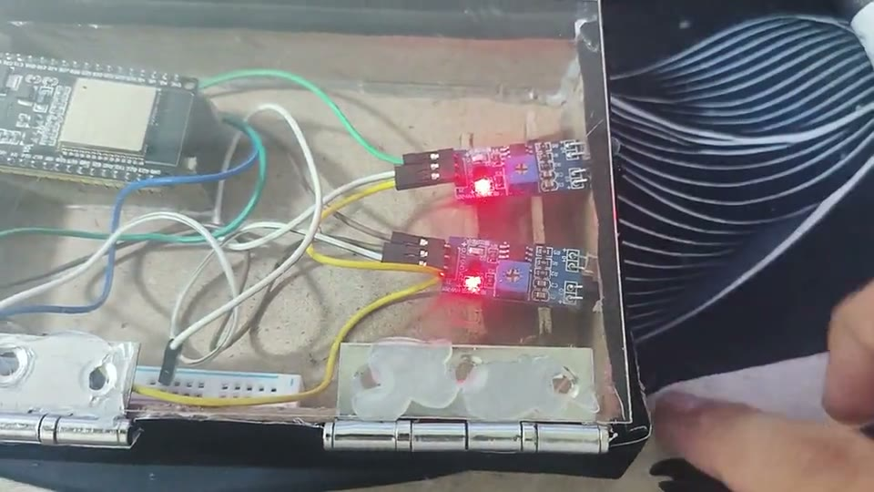
Passenger out — door rig
The door rig during an exit event.
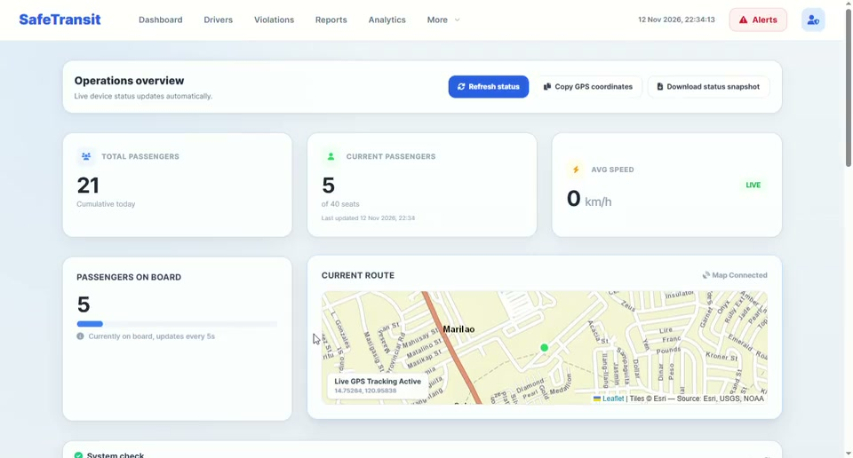
Passenger out — dashboard
The dashboard count as a passenger exits.
GPS & devices
2 clipsWhere the vehicle is and whether the kit is healthy.

Accounts & identity
10 clipsSign-in, registration, OTP, driver records and the admin tools around them.
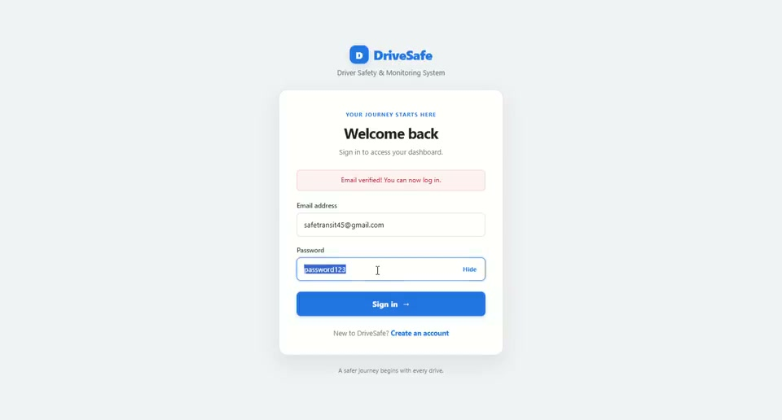
Web login
The operator login screen for the web dashboard.
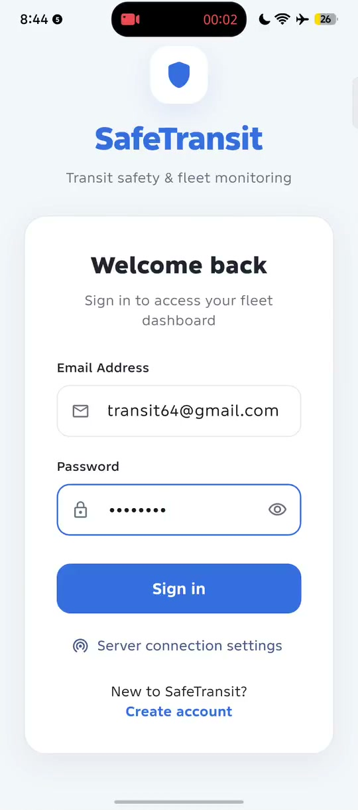
Mobile login
The Android sign-in screen and server connection settings.

Account activation
The OTP and account-approval flow for a new operator.

Add and delete user
Creating, removing and restoring an operator or conductor account.
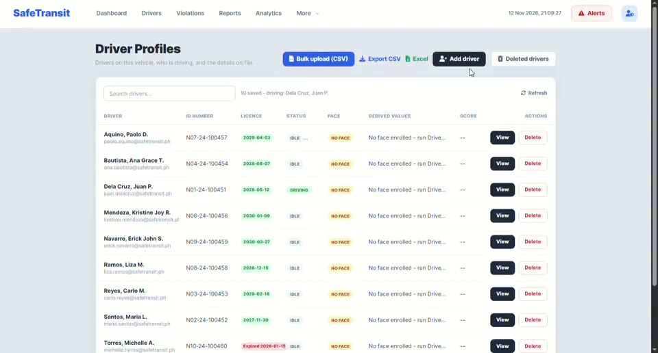
Add, delete and restore driver
Driver records: add, remove and restore from the archive.
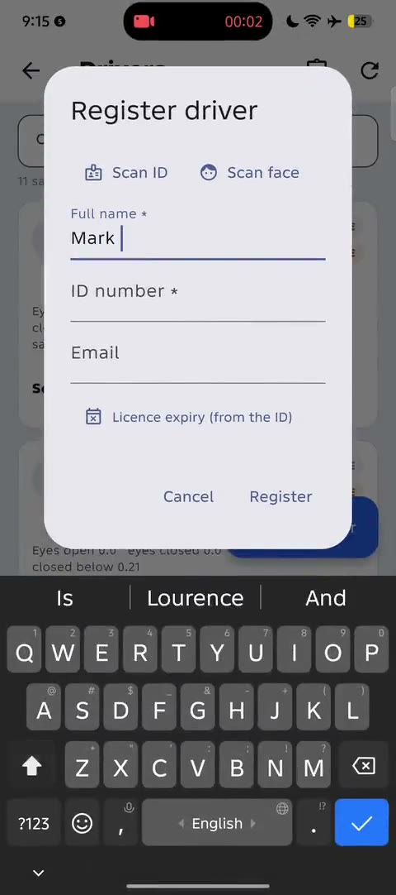
Add driver — mobile
Registering a driver from the phone: name, ID number, email and licence.
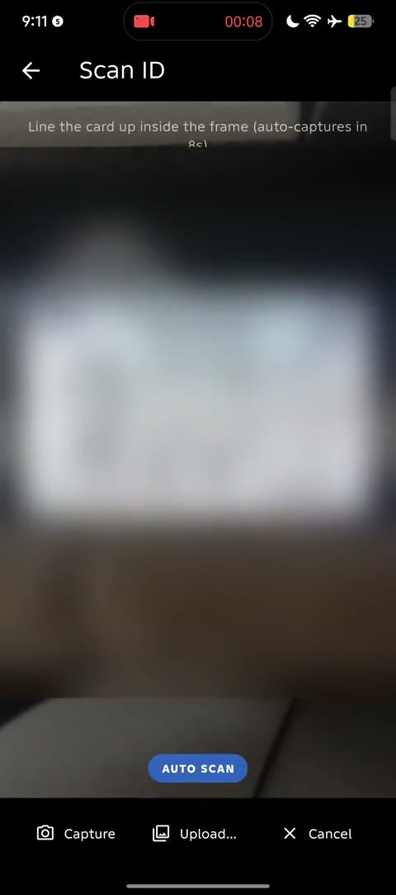
Scan ID — mobile
The ID capture screen; the licence details are blurred in this public copy.
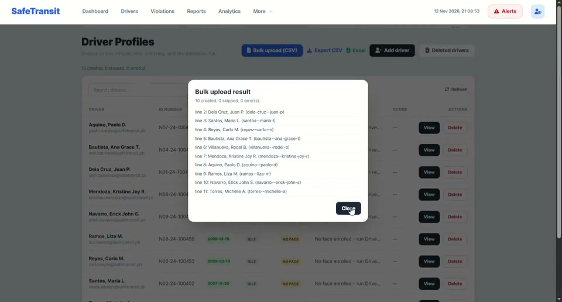
Bulk upload drivers
Importing several driver records from a spreadsheet or CSV.

Import / export database
Moving the database in and out of the local server.

System logs
The activity log for account changes, deletions and alerts.
Reports & review
4 clipsWhat the shift leaves behind for the operator.
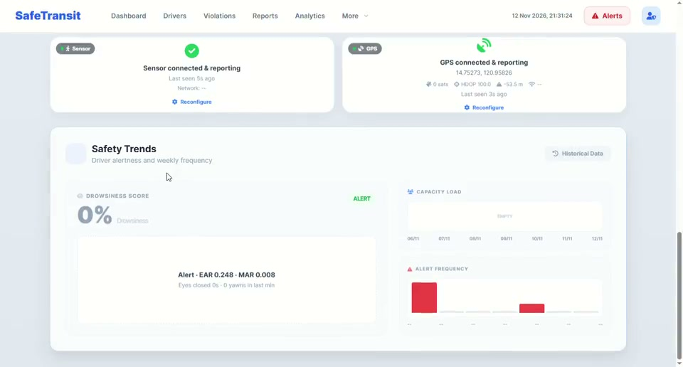
Live safety trends
The safety-trend cards and alert frequency for the selected period.
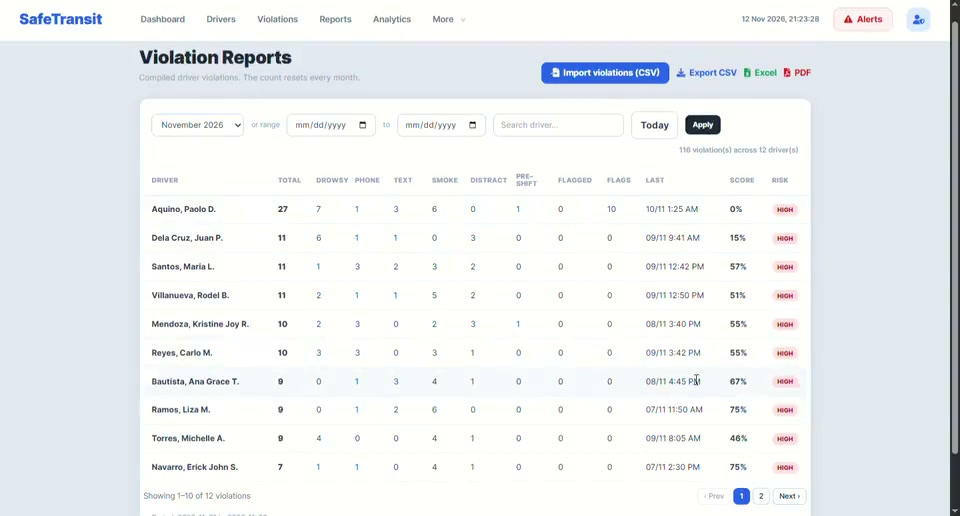
Violation reports
Per-driver violations with totals, risk bands and export actions.
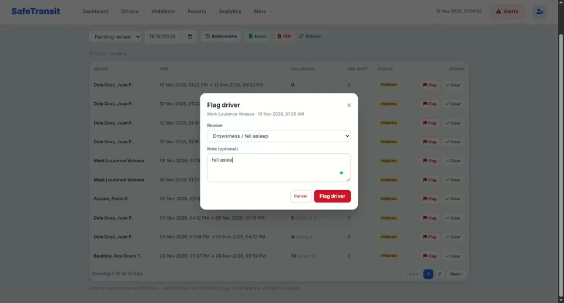
Trip review
The finished-shift review queue for flagging or clearing a driver.
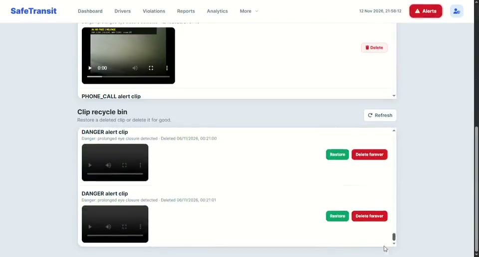
Recordings & deleted clips
The clip library and recycle bin for saved alert footage.
Screenshots
16 imagesThe dashboard, hardware and mobile screens used across the showcase.